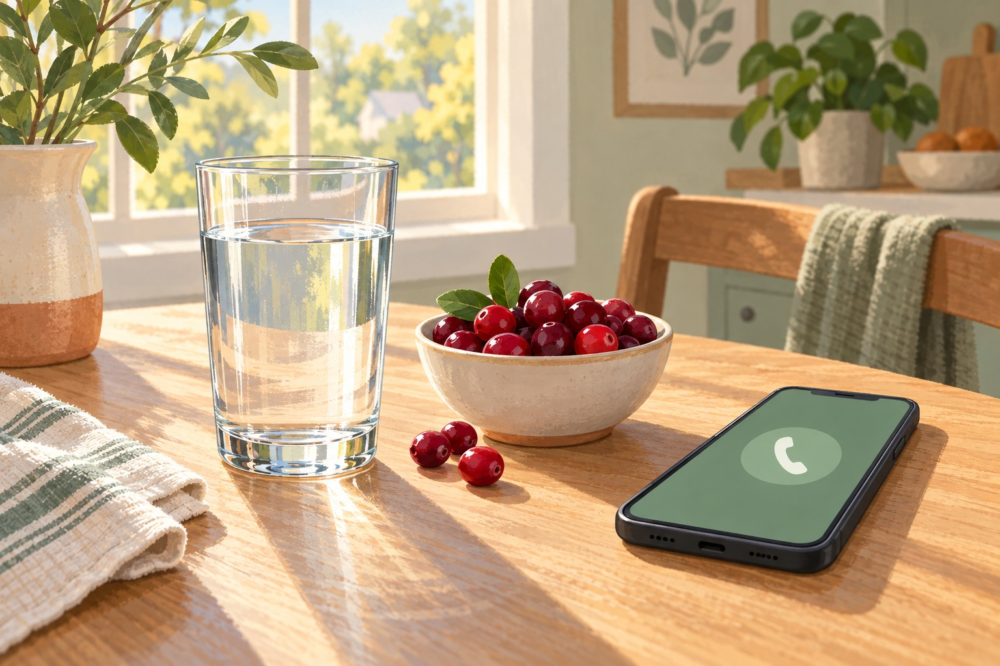

Your bladder has entered the chat
You just went to the bathroom. Now you have to go again. You get there, manage about three drops, and it burns. Your bladder is behaving like a smoke alarm with a low battery: loud, persistent, and impossible to ignore.
A urinary tract infection, or UTI, is one possibility. Most start in the lower urinary tract, often the bladder. But burning does not automatically mean a UTI, and a shopping cart full of cranberry juice is not a treatment plan.
Recognize the pattern, then make the call
Common bladder-infection symptoms include burning when you pee, frequent or intense urges even when little comes out, and discomfort low in your belly. Urine can look cloudy, smell stronger, or contain blood. A smell or color change by itself is not enough to diagnose an infection. If you see blood, contact a clinician promptly rather than deciding it must be a UTI.
If you have bladder-infection symptoms, contact your primary care team. Tell them when things started, what hurts, and whether you have fever, back pain, or a chance of pregnancy. Burning can also come from other conditions, including vaginal irritation or infection. Your clinician may ask for a urine sample and, when needed, a culture to help identify the bacteria.
Know when the plan changes
Fever or chills, pain in your back or side, nausea, or vomiting can signal a kidney infection. Get urgent medical assessment rather than waiting for a routine appointment. You do not need every symptom on that list for it to matter.
Confusion, trouble breathing, or extreme illness with a possible infection calls for emergency care. Infections in the urinary tract can sometimes lead to sepsis, a medical emergency.
Pregnant and think you have a UTI? Call your pregnancy-care clinician right away. If you cannot reach them, seek urgent care. Do not wait to see whether juice and a good night's sleep fix it.
Treat the infection, not the group-chat diagnosis
Bacterial bladder infections are commonly treated with antibiotics. Which one, and for how long, depends on the infection and your medical history. Your allergies and urine-test results can help guide the choice. Someone else's prescription is not a shortcut, even if their symptoms sounded exactly like yours.
Take antibiotics exactly as prescribed. Do not share them, save them for the next episode, or raid an old bottle in the cabinet. If you develop side effects, cannot take the medicine, or are not improving, contact the prescribing team. Worsening symptoms deserve a new assessment, not a bigger cranberry order.
What you can do while getting care
Drink enough water to stay hydrated. If you have heart or kidney disease or a prescribed fluid limit, ask your care team how much is right for you. This is not a contest to see who can finish a gallon first. A heating pad may help ease discomfort, but comfort measures do not replace treatment when an infection needs it.
Cranberry products may help prevent repeat UTIs in some women, but the evidence is inconsistent. They do not treat an infection you already have. Prevention and treatment are two different jobs. Cranberry does not get promoted because it comes in a fancy bottle.
If infections keep coming back, tell your primary care team. A prevention plan may include reviewing bladder-emptying habits, birth control, or menopause-related changes. You should not have to keep improvising the same miserable week.
The small move that matters
New burning and repeated bathroom trips? Call your care team instead of starting a home-remedy marathon. Catching the problem early gives you a better shot at getting the right care before it turns into a much bigger interruption.
Have questions? Schedule with your primary care provider. To ask about seeing Dr. M. Nunez, call (855) 776-7266 or visit Prosano Health. Prosano Care Center access depends on your health plan.
General health information only, not a diagnosis or individualized medical advice. Your symptoms and treatment need a clinician's assessment. Seek urgent or emergency care for the warning signs above.
Sources for the article
NIDDK: symptoms and kidney-infection warning signs
NIDDK: diagnosis and urine testing
NIDDK: treatment, hydration and prevention
ACOG: UTIs, pregnancy and prompt assessment
NCCIH: cranberry prevention evidence and treatment limits